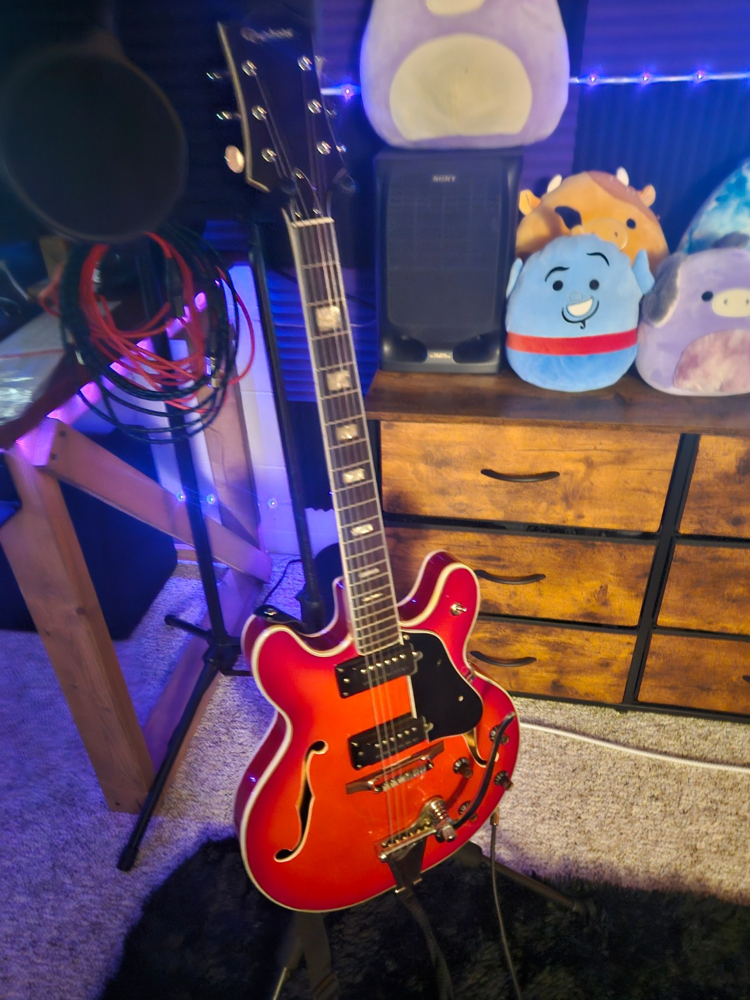

(1).jpg)
About Me
I'm a young adult striving to succeed in life and pursue a career in music. I have three sisters and three pets. Throughout my life I've played lots of sports and done lots of clubs, but the one thing thats resonated with me until today is music.
Interests
- Writing, producing and making music
- Playing Volleyball
- Cooking
- Singing
Music Career
Starting the summer after my second year of highschool, music took over my life. Playing music, writing music and singing have become my everyday life. It all started when I bought a bass guitar to join jazz band just because it seemed like fun. My Dad and I would play improv sessions in the living room and record it on my phone. Then at the end of the night we'd have three to four improvs that we'd listen to on his tv. When my phone would connect to the tv and play the music, it would show the phrase "Not Provided". Thats how we got our band name, NotProvided. About a year later I bought an audio interface called a focusrite scarlett 2i2. That's what really set us off. Now that we had that we could actually layer and create music. We gradually got better and better and create a clean unique sound which brings us to today. Today we have released two albums and a few singles with much more on the way.
My instruments
I have two acoustic guitars, two electric guitars, one bass guitar, two keyboards and one ukulele. This is my favorite electric guitar, my full hollow body epiphone.

Future Goals
My goal is to continue improving as a musician and producer while building a career around music. I want to keep creating music, performing, and developing my skills.